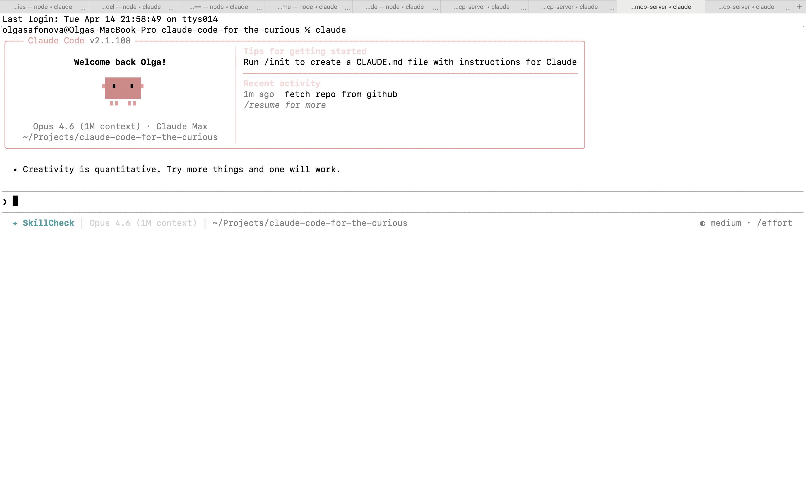

Claude Code for the Curious
What happens when you tell your computer what to build and it actually does it
What is Claude Code?

You describe the outcome. It figures out the steps.
Let's explore
something together
Pick one. I'll type it in. We'll see what happens.
- Explain a repo. Point it at a public project, get the full picture
- Analyze our attendees. Turn tonight's registration CSV into a visualization
- Edit this deck. Add a slide to this presentation, live
Things you can ask it
- "What does this project do? Give me a summary"
- "Compare these two competitor landing pages"
- "Find every place we mention pricing in our docs"
- "Write user stories from this requirements doc"
- "Analyze this spreadsheet and flag outliers"
- "Draft release notes from this list of changes"
Be specific about what you want. Vague asks get vague results.
Morning standup prep
One command. I type /today and it builds my daily ToDo from DevOps, GitHub, Granola meeting notes, and session history.
The recording is not published. It was captured on a work machine and shows internal repositories and colleagues by name.
Runs on my work network, so this one was pre-recorded for the room.
Colleague asks a question
I type /lmwtfy and it researches the answer across source code, wiki, Help articles, and DevOps.
The recording is not published. It was captured on a work machine.
Searches source code first, then the customer-facing help center, then wiki and DevOps. Saves the answer and proposes wiki updates for knowledge gaps.
How I actually work with AI
I'll type /insights right now. It reads 30 days of my session history and generates:
- Which projects I worked on and how much time each got
- My interaction style: how I prompt, correct, and iterate
- Auto-generated rules from patterns in my behavior
- Recommendations based on my actual usage
Runs locally. No data leaves my machine.
Let's try it together
- Find a group. One person with Claude Code or claude.ai per table.
- Pick something to try: explain a repo, draft a spec, analyze a dataset
- One person types, everyone suggests what to ask
- The best questions come from product thinking, not code knowledge
Claude Code needs a Pro subscription ($20/mo) or API key. Everyone else: open claude.ai. Same brain, different interface.
You don't need to code to create.
You need to be curious.